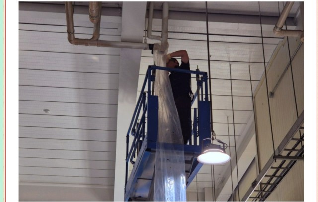

안녕하세요 고고고설비입니다. 오늘 현장은 안성 공도 회사 2층 배관 문제 해결 과정 안내입니다. 쾌적한 업무 환경 조성을 위해 이번에 진행된 배관 문제 해결 과정을 정성껏 안내드리겠습니다.
안성시 공도읍에 위치한 귀사 건물은 2층에 식당과 화장실이 있어, 2층 배관이 상시 사용됩니다. 최근 2층 화장실과 식당의 배관에서 막힘, 역류, 냄새 등의 불편한 현상이 반복되어, 현장 전반적으로 불편이 누적되고 있었습니다.
특히, 귀하께서 요청하신 바와 같이 이러한 문제를 근본적으로 해결하기 위해 저희는 1층에서부터 샤프트를 통해 접근하는 방식으로 공사 계획을 수립했습니다. 그리고 작업의 안정성과 효율성을 함께 확보하기 위하여 고소사다리를 병행 사용하는 방식을 채택했습니다.
샤프트는 1층에서 2층 배관에 접근하는 가장 안전하고 효율적인 경로로서, 해당 공간에 사다리를 세우고 배관 내부로 접근이 가능한 구조입니다. 이를 통해 건축물 외벽을 해체하거나 지나치게 넓은 공간을 확보하지 않고도 2층 구역 배관에 대한 작업이 가능하도록 설계되었습니다.
1층 샤프트 입구에 고소사다리를 세워, 작업자가 안정적으로 2층 배관 위치에 접근할 수 있도록 하였습니다. 높은 곳에서 작업하는 만큼, 사다리 설치 시 적절한 종류 및 적정 하중의 사다리를 사용하고, 작업자가 도구와 장비를 함께 사용하는 상황을 고려하여 하중 허용 범위가 충분한 사다리를 선택했습니다. 직업안전보건청이 권고하는 것처럼 고소사다리를 병행함으로써, 샤프트 접근 시 공간 구조에 맞춘 효과적인 안전 확보가 이루어졌습니다.